Two Android apps for a self-hosted
MeTube server — the yt-dlp
web downloader you already run on your NAS or homelab. Share a link from
your phone, and either keep the file on the server and stream it, or pull it
to the device and let the server clean itself up.
Listed in MeTube's own README, under
Sending links to MeTube.
There is no Play Store build, because Play does not allow this category.
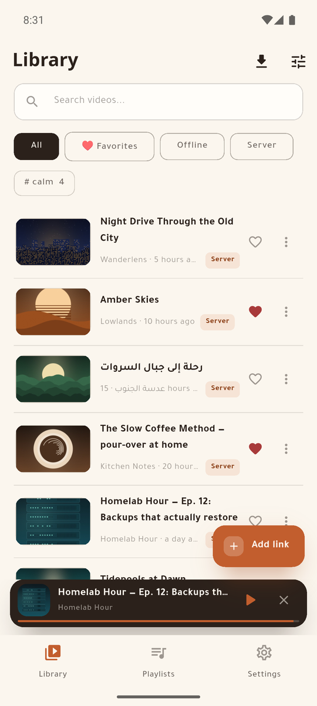
A look inside
Every title, channel and cover below is invented for these screenshots; no real server or account appears in them.
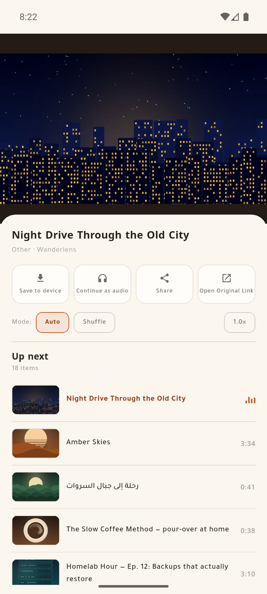
Stream from your serverSave to the phone, continue as audio, share, with the queue beneath.
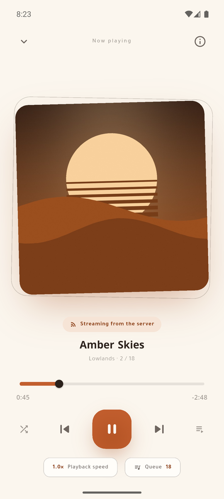
A real audio playerBackground playback, lock-screen controls, speed and shuffle.
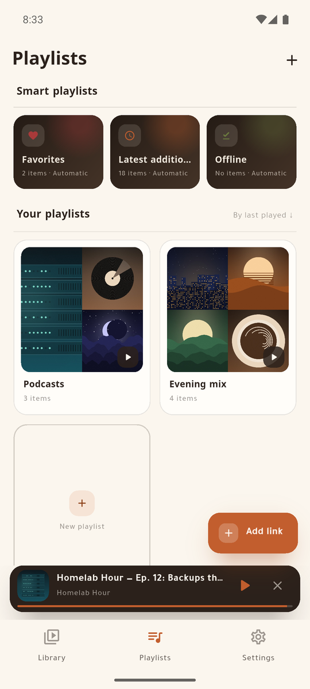
PlaylistsFavourites, latest and offline build themselves; yours sit beneath.
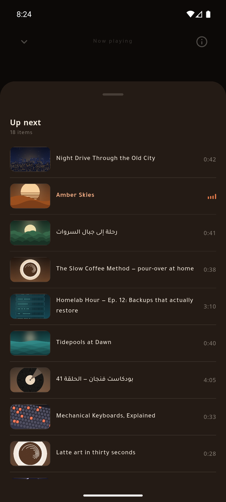
Up next, at nightA full night palette, not a half-dark screen.
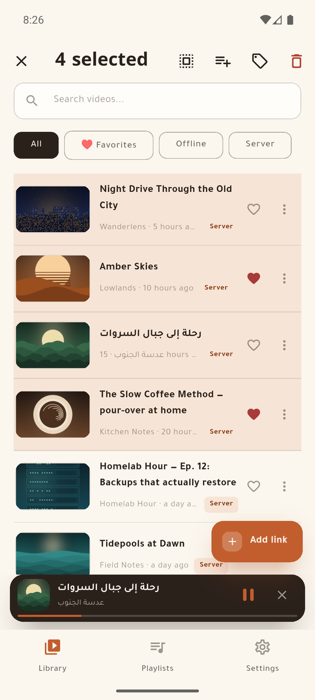
Batch actionsSelect many: add to a playlist, tag, or delete from the server.
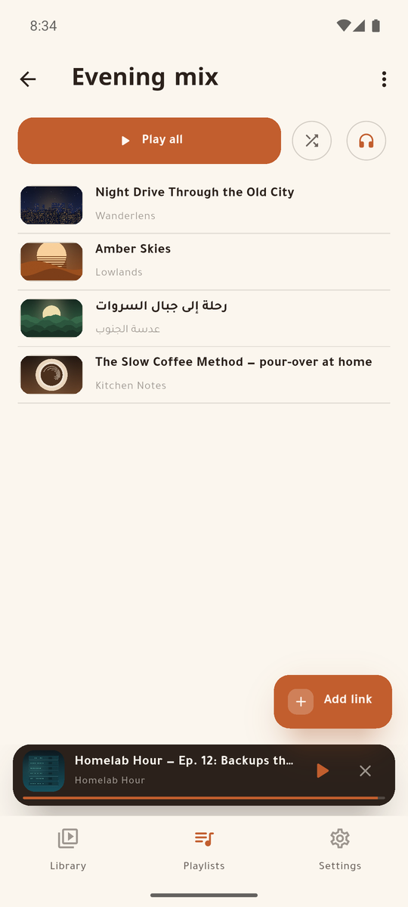
Play all, or just listenAny playlist plays as video or as audio only.
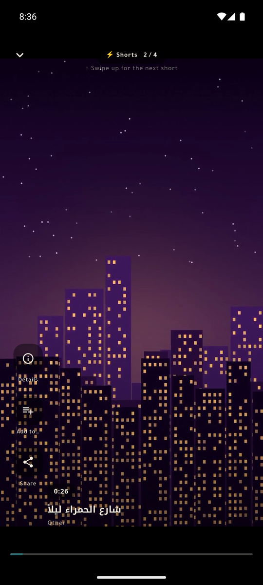
A lane for portrait clipsSwipe through short vertical videos, full screen.
Swipe sideways for more →
Which app is for you
MeTube Lite
For family and friends who just want the file.
After a download
Pulls the file to the phone, then removes it from the server.
Library
What is on the phone.
Playback
Local files.
Also has
A Wi-Fi-only rule for limited data, and it finishes at the next launch what a killed app could not.
MeTube Super
For the person who runs the server.
After a download
Keeps everything on the server.
Library
The server's history and the phone's files, merged into one.
Playback
Streams from the server, and plays local files.
Also has
Tags, batch downloads, make available offline, a server card that says what the server holds and runs, and two addresses it switches between.
They are separate apps and install side by side.
MeTube Lite, start to finish
Share a link from any app. The server downloads it, the phone pulls the
file, and the server is cleared — so a shared family server does not fill up.
Links from Android's share sheet, even from a cold start, and several at once.
A four-stage pipeline — add, follow, pull, clean — with live progress and a cancel that leaves nothing behind.
Reaches the server at home or through a tunnel, and can hold downloads to Wi-Fi.
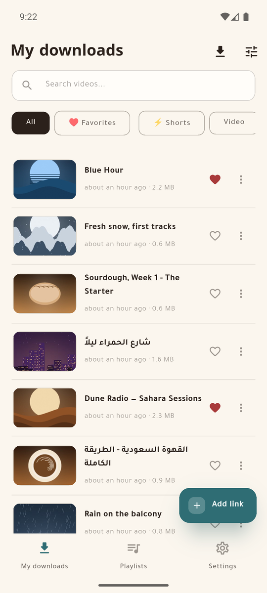
By day
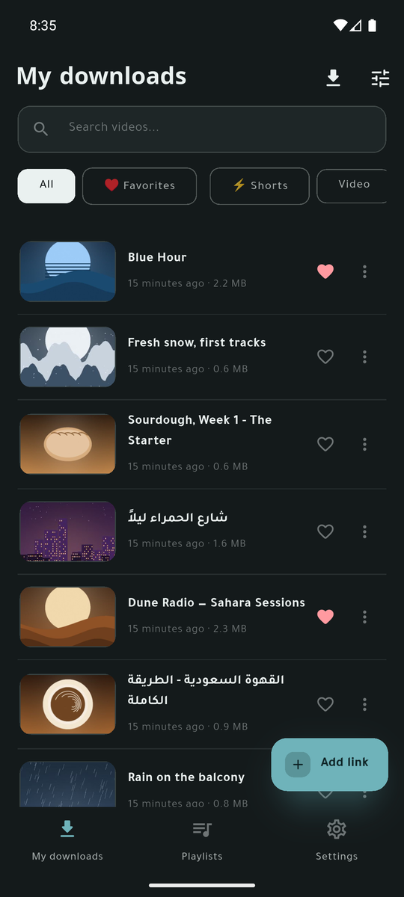
At night
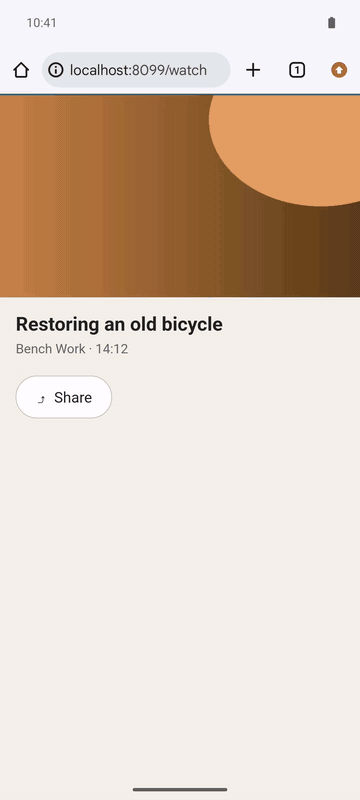
Twenty seconds, invented demo data.
Shared by both
Background audio with a media notification and lock-screen controls, a mini player, and a lane for portrait clips.
Playlists, favourites, search, and plain-JSON backups that hold no secret.
In-app updates, straight from the GitHub releases page.
A day palette and a night palette, each drawn on purpose.
Arabic and English, right-to-left first.
No server yet?
These are clients: they download nothing by themselves. Every file is
fetched by your own MeTube server, and that server runs anywhere Docker
runs — a PC, a NAS, a Raspberry Pi:
Then point the app at that address. Four server settings change how the
apps behave, and the absence of each looks like a defect in the app; they
are listed, with the symptom each one causes, in
the server setup guide.
تطبيقان لأندرويد لسيرفر
MeTube الذي تستضيفه بنفسك.
شارك الرابط من جوالك، ثم إما أن يبقى الملف على السيرفر فتشغّله بثّاً، أو
يُسحب إلى جهازك ويُنظَّف السيرفر تلقائياً.
MeTube Lite
للعائلة والأصدقاء: يريدون الملف فقط.
بعد التنزيل
يسحب الملف إلى الجوال ثم يحذفه من السيرفر.
المكتبة
ما هو على الجوال.
التشغيل
الملفات المحلية.
وفيه أيضاً
قصر التنزيل على Wi-Fi، وإكمال ما لم يكتمل عند الفتح التالي.
MeTube Super
لمالك السيرفر.
بعد التنزيل
يُبقي كل شيء على السيرفر.
المكتبة
سجلّ السيرفر وملفات الجوال في مكتبة واحدة.
التشغيل
بثّ من السيرفر، وتشغيل محلي.
وفيه أيضاً
وسوم، وتنزيل دفعات، و«إتاحة دون اتصال»، وبطاقة تعرض ما على السيرفر ونسخته، وعنوانان بتبديل تلقائي.
استقبال الروابط من قائمة المشاركة، ولو كان التطبيق مغلقاً، وعدة روابط معاً.
تشغيل الصوت في الخلفية مع إشعار وسائط وأزرار في شاشة القفل، ومشغل مصغّر، ومسار للمقاطع الطولية.
قوائم تشغيل ومفضلة وبحث، ونسخ احتياطية بصيغة JSON لا تحمل أي سرّ.
تحديث ذاتي من صفحة الإصدارات.
واجهة عربية كاملة من اليمين إلى اليسار، بوضعين نهاري وليلي.
لا تملك سيرفراً؟ التطبيقان لا ينزّلان شيئاً بنفسيهما: سيرفر
MeTube هو من ينزّل، وهو يعمل بأمر Docker واحد على أي كمبيوتر أو راسبيري
باي — والأمر مكتوب في الأعلى. ثم وجّه التطبيق إلى عنوانه.